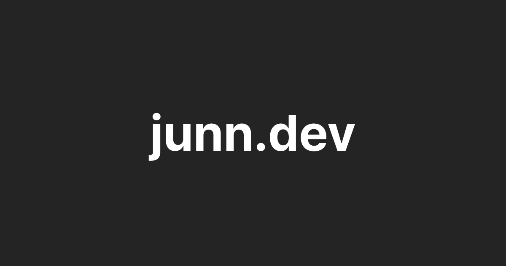
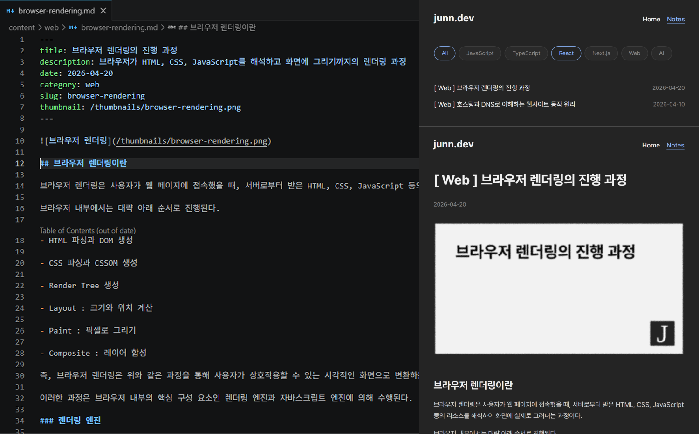
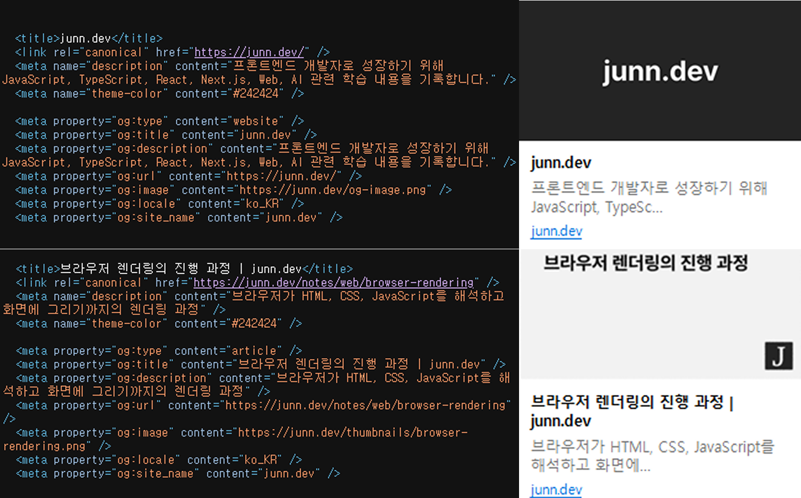

junn.dev 개인 블로그
Markdown 기반으로 글을 작성하고, 빌드 시 이를 가공하여 화면에 렌더링하는 개인 기술 블로그입니다.
단순히 글을 작성하는 공간을 넘어서, GitHub 레포지토리를 콘텐츠 관리 시스템(CMS)처럼 활용하여
Markdown 파일을 중심으로 콘텐츠를 관리하고, 변경 이력을 Git으로 추적할 수 있도록 설계했습니다.
주요 기능

Markdown 파일을 데이터 소스로 사용하여 게시글을 관리하도록 설계했습니다. 파일을 읽어 본문(content)과 메타 정보(frontmatter)를 분리하고, React Markdown을 통해 본문을 렌더링했습니다.
또한 frontmatter를 활용해 제목, 설명, 날짜, 카테고리, slug 기반 라우팅을 구성하여 카테고리별 게시글 목록과 상세 페이지를 구현했습니다.

frontmatter를 기반으로 페이지별 SEO 메타데이터 및 OG 태그를 생성하도록 구현했습니다.
Prerender를 적용하여 빌드 시점에 각 페이지의 HTML을 미리 생성하고, 메타데이터를 포함한 완성된 HTML 전달하도록 개선하여 초기 렌더링 성능과 검색엔진 노출을 함께 향상시켰습니다.
트러블 슈팅
메타데이터가 초기 HTML에 반영되지 않는 문제
- 문제
- react-helmet-async로 페이지별 메타데이터를 적용했으나, 개발자 도구에서는 정상적으로 보이는 반면 Ctrl+U 원본 HTML에는 반영되지 않는 문제가 발생했습니다.
- 원인
- react-helmet-async는 React 렌더링 이후에 head를 수정하는 방식으로, 초기 HTML에는 메타데이터가 포함되지 않습니다. 개발자 도구는 JS 실행 이후 DOM을 보여주지만 Ctrl+U는 서버가 내려준 원본 HTML을 보여주기 때문에 차이가 발생했습니다.
- 해결
- 클라이언트 방식을 제거하고, 프리렌더 단계에서 HTML 생성 시 메타데이터를 포함하도록 변경했습니다. metadata.ts에서 URL 기준으로 메타데이터를 생성하고, entry-server.tsx에서 head에 삽입하는 구조로 재설계했습니다.
- 결과
- 초기 HTML에 메타데이터가 포함되어 SEO 및 SNS 공유 미리보기가 정상 동작하게 되었습니다. 클라이언트 라우팅 전환 시에도 title, description, OG 태그가 올바르게 갱신되도록 head 동기화 로직을 추가해 SPA 환경에서도 완전히 대응했습니다.
gray-matter 사용 시 Buffer 에러 발생
- 문제
- Markdown frontmatter 파싱을 위해 gray-matter를 사용했으나, 브라우저 실행 시 Buffer is not defined 에러가 발생했습니다.
- 원인
- gray-matter는 Node.js 환경을 기준으로 만들어진 라이브러리로 내부적으로 Buffer를 사용합니다. 브라우저에서는 Node.js 전역 객체를 사용할 수 없어 에러가 발생했습니다.
- 해결
- 외부 라이브러리 없이 브라우저에서 직접 동작하는 frontmatter 파서를 직접 구현했습니다. --- 구분자를 기준으로 문자열을 분리하고 key-value 형태로 파싱하는 방식으로 처리했습니다.
- 결과
- 브라우저 환경에서 정상 동작하게 되었고, 외부 의존성을 제거했습니다. 직접 파서를 구현하면서 Markdown 데이터 구조에 대한 이해도도 높일 수 있었습니다.